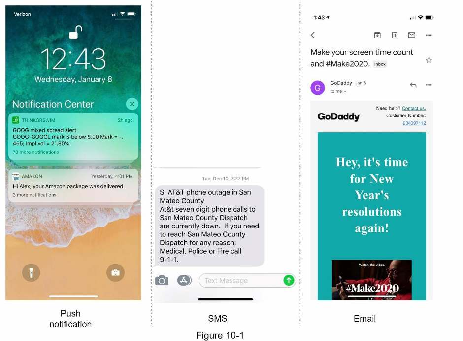
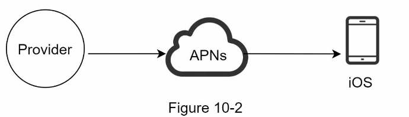
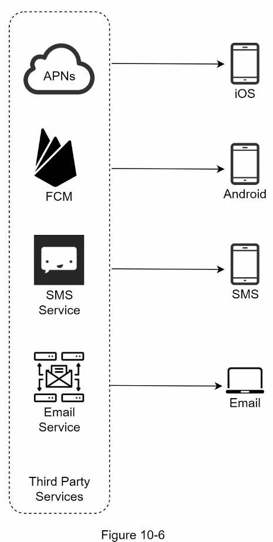
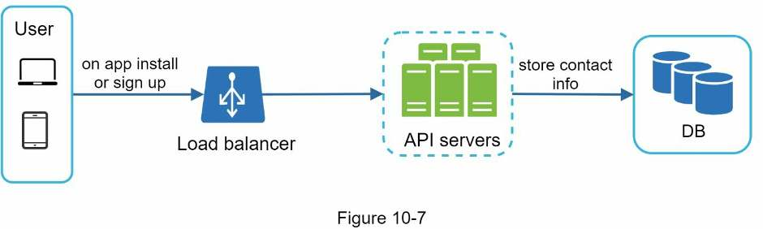
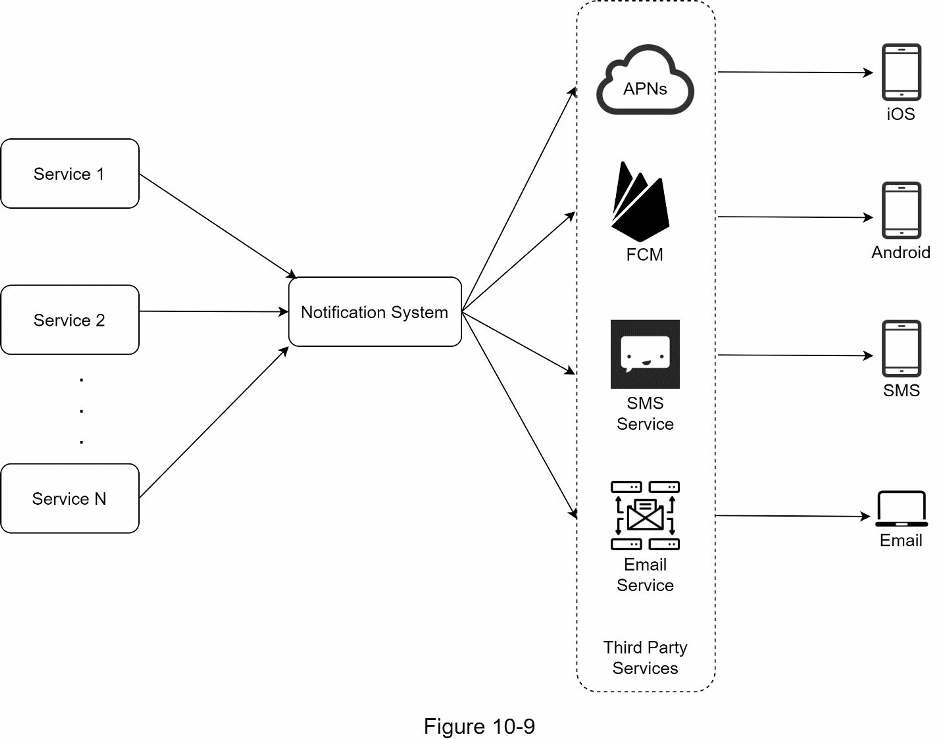
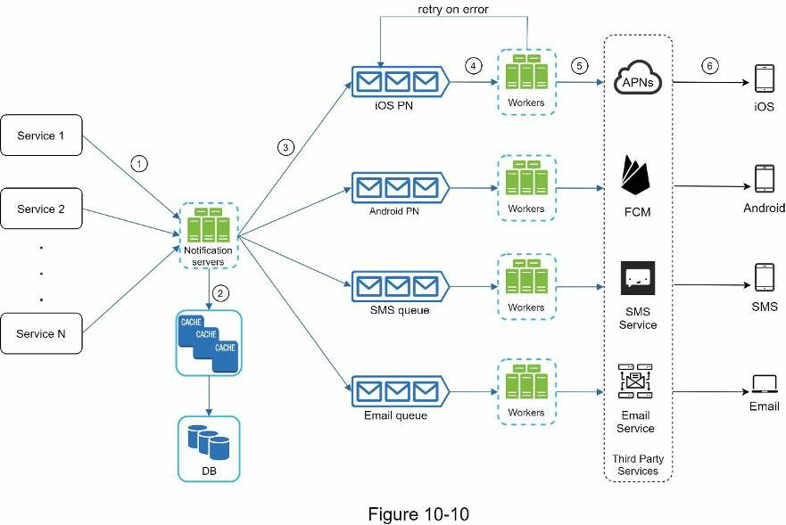
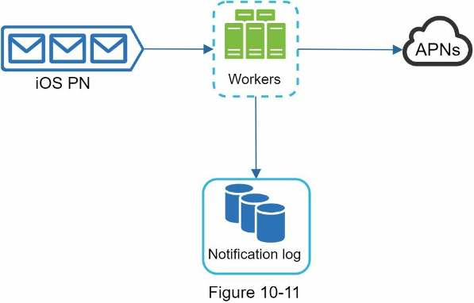
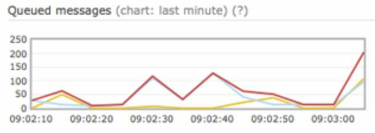
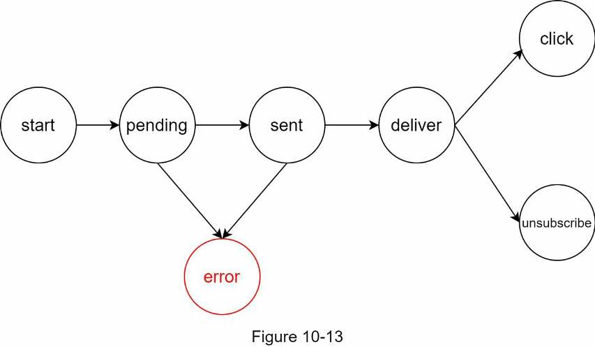

Chapter 10 · Design problem
Design a Notification System
How to send millions of push, SMS and email notifications a day: which third-party service delivers each channel, why you put one message queue per channel between your servers and those services, and how a notification log, dedupe, retries and rate limits keep notifications from being lost or turning into spam.
TL;DR
- Scope: push (iOS, Android), SMS and email. Soft real-time, opt-out supported, 10M push + 1M SMS + 5M email per day.
- Third parties deliver: iOS → APNs, Android → FCM, SMS → Twilio/Nexmo, email → Sendgrid/Mailchimp. Collect device tokens, phone numbers and emails at install or sign-up.
- Flow: services → notification servers (auth, rate limit, validate, read user/device/settings from cache/DB) → one message queue per channel → workers → third party → device.
- Queues decouple components and absorb spikes. One queue per channel means one provider's outage doesn't block the other channels.
- Never lose a notification: persist it in a notification log; on failure, put it back on the queue to retry, and alert developers if failures persist.
- Exactly-once delivery is impossible. Reduce duplicates by deduping on event ID.
- Also: templates, per-channel opt-in settings, per-user rate limiting, appKey/appSecret, queue-depth monitoring, event tracking.

Interview answer skeleton
If asked this in an interview, walk through these four beats. Each maps to a section below.
- Clarify (≈5 min) Ask which channels, how real-time, which devices, what triggers a notification, whether users can opt out, and daily volume (10M push, 1M SMS, 5M email).
- High-level (≈15 min) Name the provider for each channel and what it needs (device token, phone number, email). Show how contact info is collected. Draw the single-server design, name its three problems, then draw the improved design: notification servers, cache/DB, a queue per channel, workers.
- Deep dive (≈15 min) No data loss (notification log + retry). Dedupe by event ID, since exactly-once is impossible. Then templates, opt-in settings, rate limiting, retries, appKey/appSecret, queue monitoring, event tracking.
- Wrap up (≈5 min) Reliability, security, tracking and monitoring, respecting user settings, rate limiting.
Step 1Understand the problem
Pin down channels, latency, devices, triggers and volume. The question is deliberately open-ended.
A notification alerts a user to important information: breaking news, product updates, events, offers. It comes in three formats: mobile push notification, SMS message and email.

| You ask | Interviewer says |
|---|---|
| What types of notifications does the system support? | Push notification, SMS message, and email. |
| Is it a real-time system? | Soft real-time. Users should get notifications as soon as possible, but a slight delay is acceptable under high workload. |
| What are the supported devices? | iOS devices, Android devices, and laptop/desktop. |
| What triggers notifications? | Client applications can trigger them. They can also be scheduled on the server side. |
| Will users be able to opt out? | Yes. Users who opt out no longer receive notifications. |
| How many notifications are sent each day? | 10 million mobile push notifications, 1 million SMS messages, and 5 million emails. |
Requirements
- Three channels: push notification, SMS, email
- Soft real-time: deliver fast, tolerate slight delay at peak
- Devices: iOS, Android, laptop/desktop
- Triggered by client apps or scheduled on the server
- Users can opt out
Step 2High-level design
Third-party services do the actual delivery. Your system collects contact info and gets notification events to those services reliably and at scale.
Different types of notifications
iOS push notification
Three components are needed:
- Provider: builds notification requests and sends them to Apple Push Notification Service (APNs). It supplies two things:
- Device token: a unique identifier used to send push notifications to one device.
- Payload: a JSON dictionary with the notification's content (example below).
- APNs: a remote service run by Apple that propagates push notifications to iOS devices.
- iOS device: the end client that receives the notification.

{
"aps": {
"alert": {
"title": "Game Request",
"body": "Bob wants to play chess",
"action-loc-key": "PLAY"
},
"badge": 5
}
}Android, SMS and email
| Channel | Third-party service | Address | Notes |
|---|---|---|---|
| iOS push | APNs | Device token | Token + JSON payload |
| Android push | Firebase Cloud Messaging (FCM) | Device token | Same flow as iOS |
| SMS | Twilio, Nexmo, others | Phone number | Mostly commercial |
| Sendgrid, Mailchimp | Email address | Own mail servers are possible, but these give better delivery rates and analytics |

Contact info gathering flow
To send anything you need device tokens, phone numbers or email addresses. When a user installs the app or signs up for the first time, API servers collect the contact info and store it in the database.

Email and phone number live in the user table. Device tokens live in a separate device table, because one user can have many devices (1 : *), and a push can go to all of them. (Figure 10-8, transcribed.)
| Table | Columns |
|---|---|
| user | user_id bigint · email varchar · country_code integer · phone_number integer · created_at timestamp |
| device | id bigint · device_token varchar · user_id bigint (→ user) · last_logged_in_at timestamp |
Sending/receiving flow: initial design

- Service 1 to N: whatever triggers a notification: a microservice, cron job or distributed system. E.g. a billing service emailing payment reminders, a shopping site texting that a package arrives tomorrow.
- Notification system: the centerpiece; to start, one notification server. It exposes APIs to services 1 to N and builds payloads for the third parties.
- Third-party services: deliver to users. Design for extensibility (easy to plug in or unplug a provider), because a provider may be unavailable in a new market or in future. FCM is unavailable in China, so Jpush, PushY etc. are used there.
- iOS, Android, SMS, email: the user's devices.
Sending/receiving flow: improved design
Three changes fix those problems:
- Move the database and cache out of the notification server.
- Add more notification servers with automatic horizontal scaling.
- Introduce message queues to decouple the components.

| Component | Role |
|---|---|
| Service 1 to N | Call the notification servers' APIs. |
| Notification servers |
|
| Cache | User info, device info, notification templates. |
| DB | Users, notifications, settings, etc. |
| Message queues | Remove dependencies between components; buffer high volumes. One queue per notification type. |
| Workers | Pull events from the queues and send them to the matching third-party service. |
| Third parties, devices | As in the initial design. |
Example send API
The book's email example: POST https://api.example.com/v/sms/send with this body. (The path says sms for an email; /v/email/send would fit better.)
{
"to": [
{ "user_id": 123456 }
],
"from": {
"email": "from_address@example.com"
},
"subject": "Hello, World!",
"content": [
{ "type": "text/plain", "value": "Hello, World!" }
]
}How a notification flows through the system
- A service calls the notification servers' API to send a notification.
- Notification servers fetch metadata (user info, device token, notification setting) from the cache or database.
- A notification event goes to the queue for its type. An iOS push event goes to the iOS PN queue.
- Workers pull notification events from the queues.
- Workers send the notifications to the third-party services.
- Third-party services deliver the notifications to user devices.
Step 3Design deep dive
Make delivery reliable (never lost, rarely duplicated), then add the components a real notification system needs.
Reliability
How do you prevent data loss?
A notification system must not lose data: notifications can be delayed or re-ordered, but never lost. To meet this, the system persists notification data in a database (the notification log) and implements a retry mechanism.

Will recipients receive a notification exactly once?
No. Most notifications are delivered exactly once, but in a distributed system duplicates can happen. To reduce them, add a dedupe mechanism and handle each failure case carefully:
- When a notification event arrives, check whether its event ID has been seen before.
- If it has, discard the event.
- Otherwise, send the notification.
Additional components and considerations
Notification template
Many notifications share a format. A notification template is a preformatted notification you customize (parameters, styling, tracking links) instead of building each from scratch. Example push template:
BODY:
You dreamed of it. We dared it. [ITEM NAME] is back — only until [DATE].
CTA:
Order Now. Or, Save My [ITEM NAME]Benefits: a consistent format, a smaller margin of error, and time saved.
Notification setting
Users easily feel overwhelmed, so apps give fine-grained control, stored in a notification setting table:
| Field | Type | Meaning |
|---|---|---|
user_id | bigInt | The user |
channel | varchar | Push notification, email or SMS |
opt_in | boolean | Whether the user opts in to this channel |
Before sending any notification, check that the user is opted in to that type.
Rate limiting
Limit how many notifications one user can receive. If you send too often, users may turn notifications off completely.
Retry mechanism
When a third-party service fails to send a notification, put the notification back on the message queue to retry. If the problem persists, send an alert to developers.
Security in push notifications
iOS and Android apps use an appKey and appSecret to secure the push notification APIs. Only authenticated or verified clients can send push notifications through your APIs.
Monitor queued notifications
The key metric is the total number of queued notifications. If it's large, workers aren't processing events fast enough. Add more workers to avoid delivery delays.

Events tracking
Metrics such as open rate, click rate and engagement help you understand customer behavior. An analytics service implements event tracking, so the notification system usually needs to integrate with it.

Updated design
Figure 10-14 (in the TL;DR) puts it all together. New since Figure 10-10:
- Authentication and rate limiting on the notification servers.
- A retry mechanism: failed notifications go back on the queue, and workers retry a predefined number of times.
- Notification templates for a consistent, efficient creation process.
- Monitoring and tracking for health checks and future improvements. The analytics service gets "send pending" from notification servers, "sent" from workers and "click tracking" from the device.
Workers also read notification templates and write the notification log; the DB holds device, setting and user info.
Step 4Wrap up
You designed a scalable notification system that supports push, SMS and email, using message queues to decouple its components. Points to raise:
- Reliability: a robust retry mechanism minimizes the failure rate.
- Security: an appKey/appSecret pair ensures only verified clients can send notifications.
- Tracking and monitoring: implemented at every stage of the notification flow to capture important stats.
- Respect user settings: users may opt out, so check their settings before sending.
- Rate limiting: users appreciate a cap on how many notifications they receive.
Self-test
What are the requirements and daily volumes for this notification system?
Push, SMS and email; soft real-time; iOS, Android and laptop/desktop; triggered by clients or scheduled server-side; users can opt out. Daily: 10M push, 1M SMS, 5M email.
What does "soft real-time" mean here?
Deliver as soon as possible, but a slight delay is acceptable when the system is under high workload.
Which third-party service delivers each channel?
iOS → APNs, Android → FCM, SMS → Twilio or Nexmo, email → Sendgrid or Mailchimp.
What two things does a provider send to APNs?
A device token (unique identifier of the target device) and a payload (a JSON dictionary with the notification content, e.g. aps.alert.title, body, badge).
When and where is contact info collected, and why are device tokens in their own table?
API servers collect it when a user installs the app or signs up, and store it in the DB. Email and phone go in user; tokens go in device because one user can have many devices, and a push can go to all of them.
Why must third-party integration be extensible?
A provider may be unavailable in new markets or in the future. For example, FCM is unavailable in China, where alternatives like Jpush or PushY are used. You need to plug providers in and out easily.
What are the three problems with the single-notification-server design?
Single point of failure; hard to scale DB, cache and processing components independently; performance bottleneck from resource-intensive work like building HTML and waiting on third parties, especially at peak.
What three changes produce the improved design?
Move the DB and cache out of the notification server, add more notification servers with automatic horizontal scaling, and introduce message queues to decouple components.
Why give each notification type its own message queue?
So an outage at one third-party service doesn't affect other notification types. Queues also buffer high volumes.
List the six steps of sending a notification in the improved design.
1) Service calls notification server API. 2) Server fetches user info, device token and settings from cache/DB. 3) Event goes to its channel's queue. 4) Workers pull events. 5) Workers send to the third party. 6) Third party delivers to the device.
How does the system avoid losing notifications?
It persists notification data in a notification log database and retries failures by putting them back on the queue (a predefined number of times), alerting developers if the problem persists.
Can you guarantee exactly-once delivery? What do you do instead?
No; distributed failures can cause duplicates. Dedupe by event ID: if an arriving event's ID was seen before, discard it; otherwise send.
What is the notification setting table, and when is it checked?
user_id (bigInt), channel (push, email or SMS), opt_in (boolean). It's checked before any notification is sent.
How are push notification APIs secured?
With an appKey and appSecret, so only authenticated or verified clients can send push notifications.
What is the key metric to monitor, and how do you react when it grows?
The total number of queued notifications. A large number means workers are too slow, so add more workers.
Terms to know
- APNs
- Apple Push Notification Service: Apple's remote service that delivers push notifications to iOS devices.
- FCM
- Firebase Cloud Messaging: the common service for sending push notifications to Android devices.
- Provider
- Your server-side component that builds notification requests and sends them to APNs/FCM.
- Device token
- Unique identifier for one device, needed to send it a push notification.
- Soft real-time
- Deliver as fast as possible, but small delays under load are acceptable.
- Message queue
- A buffer between producers and consumers that decouples them and absorbs bursts.
- Worker
- A server that pulls events from a queue and calls a third-party service.
- Notification log
- A database of notification data, persisted so failed sends can be retried, not lost.
- Dedupe
- Discarding an event whose event ID has already been seen, to reduce duplicate notifications.
- Notification template
- A preformatted notification you customize with parameters, styling and tracking links.
- appKey / appSecret
- Credential pair that restricts the push APIs to verified clients.
Book references (go deeper)
- Twilio SMS
- Nexmo SMS
- Sendgrid
- Mailchimp
- You Cannot Have Exactly-Once Delivery
- Security in Push Notifications
- RabbitMQ (misspelled "RadditMQ" in the book)